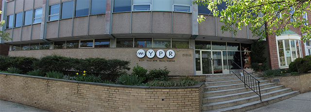

About WYPR

Mission statement
Serving the metropolitan Baltimore area and the state of Maryland, the mission of Your Public Radio is to broadcast programs of intellectual integrity and cultural merit which enrich the minds and spirits of our listeners and ultimately strengthen the communities we serve.
WYPR's principles and values include:
- WYPR will remain fundamentally noncommercial in spirit and practice
- WYPR will adhere to the highest standards of journalistic and artistic excellence
- WYPR will deliver educational, informational, cultural, and entertainment programming as a public service to the broadest possible audiences
- WYPR will operate under sound principles of fiscal planning, management and governance
- WYPR will foster a positive working environment characterized by fairness, equality of opportunity.